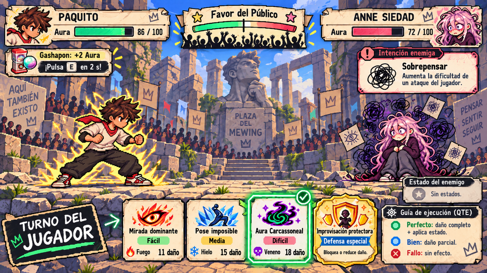

Izan Vázquez Sánchez
Equipo de desarrollo
PROYECTO ACADÉMICO · PVLI 2026–2027
"Para acabar con la fiebre del aura,
tendrás que jugar a su juego."

EL JUEGO
Proyecto Aura es un juego RPG por turnos ambientado en la Plaza del Mewing, donde distintos personajes compiten para demostrar quién domina realmente el aura.
El jugador controla a Paquito, nuestro avatar en esta lucha contra la fiebre del aura, quien deberá enfrentarse a varios rivales para llegar a coronarse como líder indiscutible de esta nueva tendencia y desmantelarlo desde dentro.
Para hacerlo deberá hacer un uso estratégico y demencial de sus nuevos adquiridos poderes los cuales pondrán a prueba sus reflejos, su destreza y su comprensión de los estados elementales dependiendo de ello su reputación y el destino de esta descarriada juventud.
AUTORES Y CRÉDITOS
Equipo de desarrollo
Equipo de desarrollo
Equipo de desarrollo
Proyecto académico desarrollado para la asignatura de Programación de Videojuegos en Lenguajes Interpretados.
Grado en Desarrollo de Videojuegos · Universidad Complutense de Madrid.